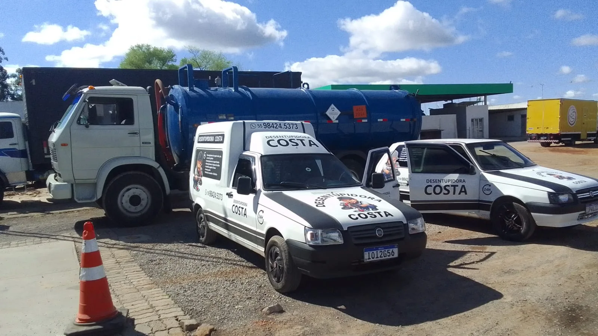
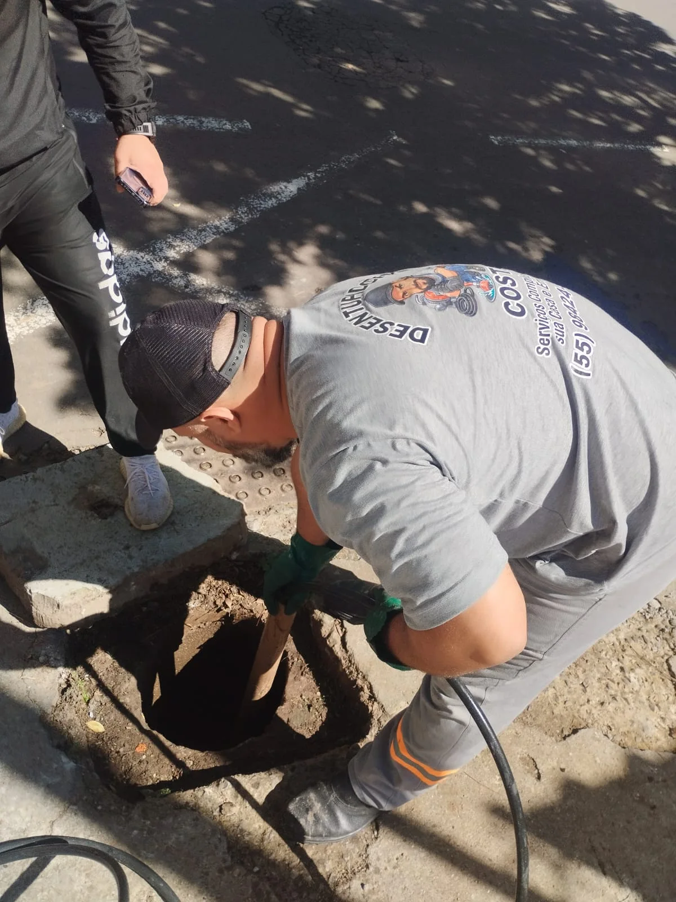
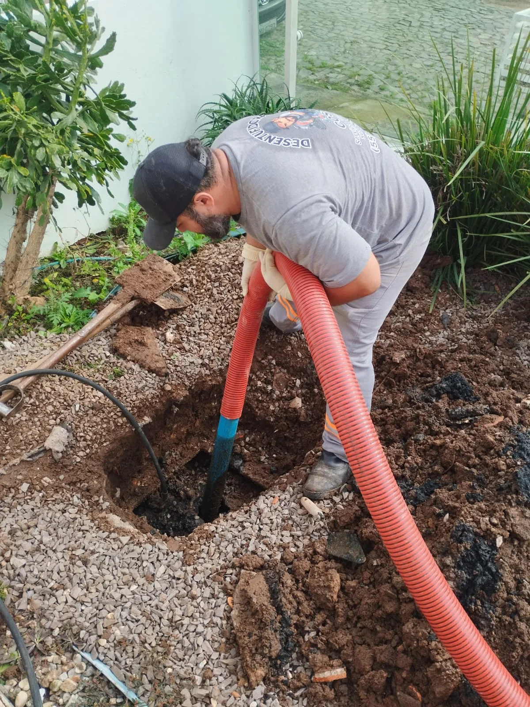
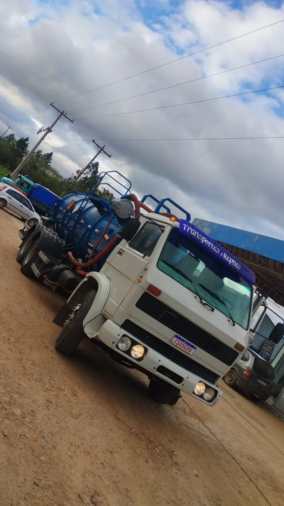
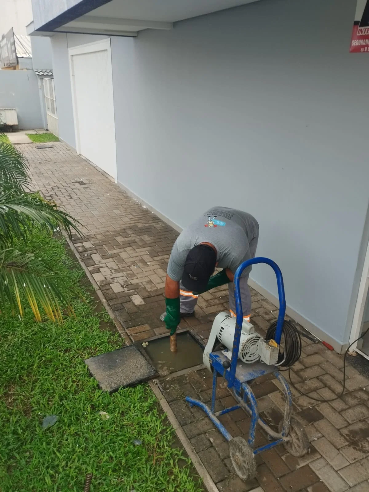
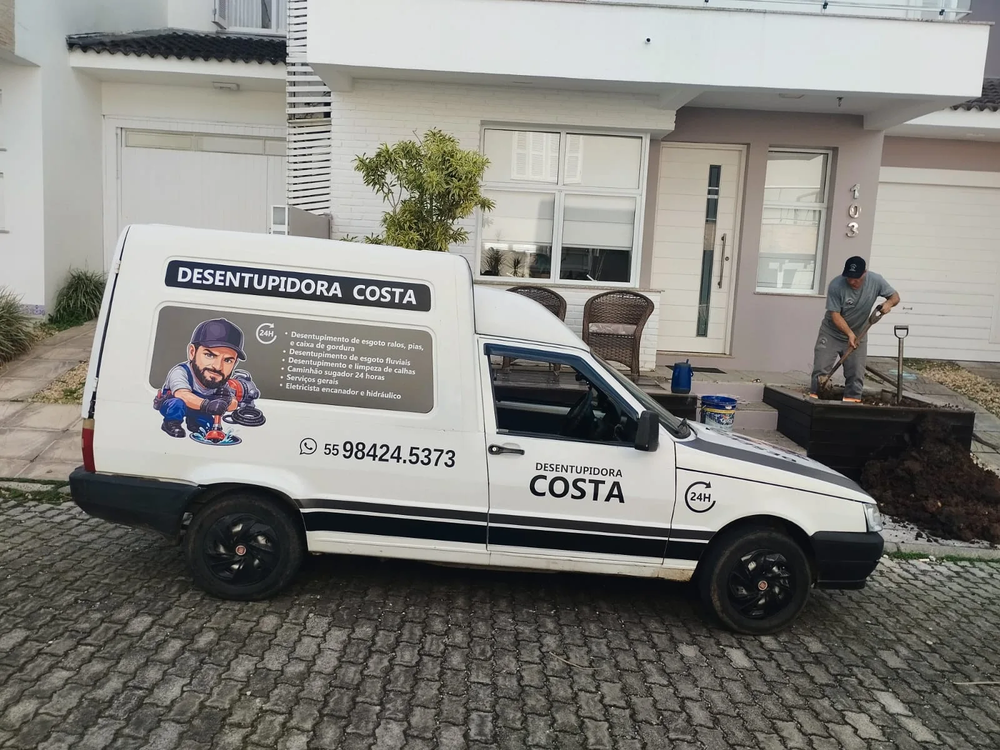

Desentupimento de pias e ralos
Para quando a água demora a descer ou fica acumulada na pia, no banheiro ou no piso.
Problemas com esgoto, pia, ralo ou caixa de gordura? A Desentupidora Costa oferece soluções para sua casa ou empresa. Fale diretamente com nossa equipe.
Atendimento 24 horas conforme disponibilidade. Consulte a equipe.

Explicamos cada serviço de forma simples para você saber quando pedir ajuda.
Para quando a água demora a descer ou fica acumulada na pia, no banheiro ou no piso.
Atendimento a tubulações e redes de esgoto com obstruções e dificuldade de escoamento.
Desobstrução e limpeza de caixas que acumulam resíduos e gordura da cozinha.
Limpeza e desobstrução de calhas e pontos de escoamento da água da chuva.
Serviços que exigem equipamento de sucção para remoção de resíduos, mediante avaliação.
Serviços hidráulicos, de encanador, elétricos e gerais. Consulte a disponibilidade.
Veja registros reais da equipe e dos equipamentos utilizados.





Atendemos Santa Maria e região com serviços de desentupimento, limpeza e soluções hidráulicas. Contamos com equipamentos para diferentes tipos de atendimento, de pias e ralos a serviços com caminhão sugador.
Descreva seu problema pelo WhatsApp e consulte a melhor solução para o seu caso.
Pedir orçamentoEntre em contato e explique o que está acontecendo.